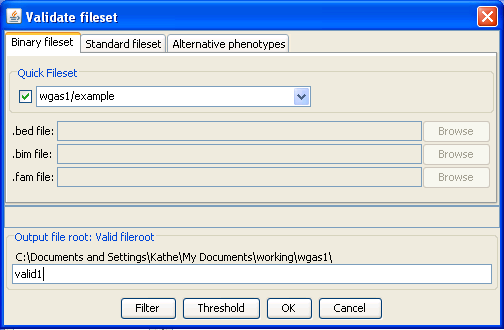

|  |
Validate fileset dialog
Selecting the menu option brings up this dialog. Most dialogs for other analyses
look similar to this:
- In the top panel we specify the data: either a binary or standard fileset. Here
we see the example fileset listed. If other filesets were in the project, the
combo box could be used to select one of them. Additionally, the individual files
(BED, BIM and FAM) can be individually specified instead (i.e. if they do not share
the same file root, or if they reside in a directory folder other than the main
project folder). Alternate phenotypes can also be specified here.
- Options specific to the particular analysis appear next. In this case there are
none.
- At the bottom, we see a place to enter the root filename for the output -- this
must be a unique name (gPLINK will tell you if it is not, stating that it is an
invalid fileroot). There are also options to filter or apply thresholds here, as we
shall see later
In this rather simple case, we just enter valid1 as the arbitrary output
fileroot for this PLINK command. In otherwords, we expect a file valid1.log
to be generated by this command.
Previous | Next
|